CoInfoSim — SUPPORT2 180-Day Mortality Dataset-Anchored Scenario
Detailed reports: SUPPORT2 dataset report · Real → Real Monte Carlo · Single Gaussian → Real Monte Carlo · GMM → Real Monte Carlo
Channel legend X₁ = meanbpX₂ = hrtX₃ = respX₄ = tempX₅ = wblcX₆ = creaX₇ = sod
1. Scientific question
To what extent do class-conditional Single Gaussian and GMM synthetic training distributions preserve the cooperative channel-subset structure observed for 180-day mortality prediction on a fixed real SUPPORT2 test set?
2. Scenario summary
3. Experimental protocol 3.1 Real → Real arm (real-data baseline) Balanced real training-reservoir draws evaluated on the unchanged fixed real test set.
3.2 Single Gaussian → Real arm Training-only class-conditional Gaussian draws evaluated on the unchanged fixed real test set.
3.3 GMM → Real arm Training-only class-conditional GMM draws evaluated on the unchanged fixed real test set.
All three main arms are evaluated on the same same fixed 1,775-row real SUPPORT2 test set.
3.4 Monte Carlo stopping rule Parameter Value Minimum replications 100 Maximum replications 2000 Replication batch size 20 CI target (95% half-width) 0.0100 Stopping criterion Stop when the maximum 95% CI half-width across all (subset, classifier) cells falls at or below the CI target, or when the maximum replications budget is reached.
4. Data visualization 4.1 Projection panels Real data Single Gaussian GMM
1D 2D 3D
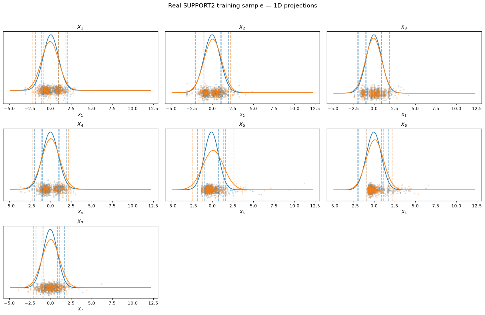
Real training sample — 1D projections 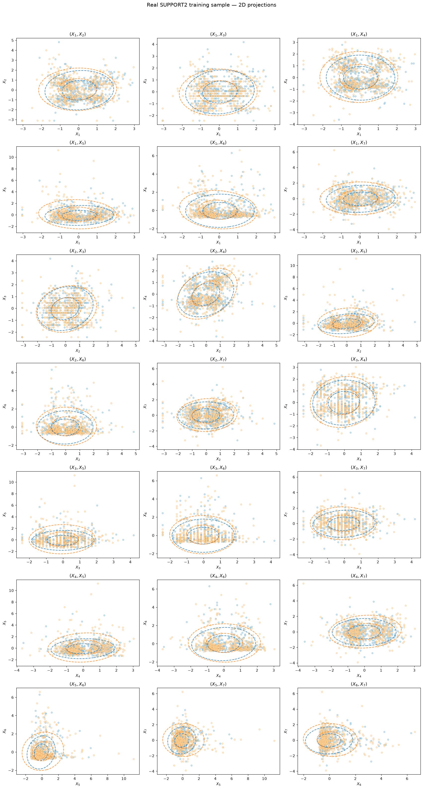
Real training sample — 2D projections 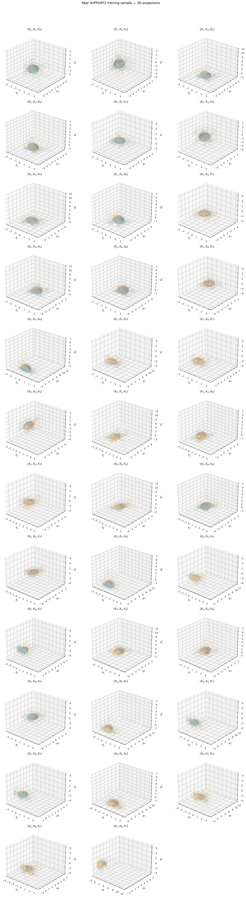
Real training sample — 3D projections 1D 2D 3D
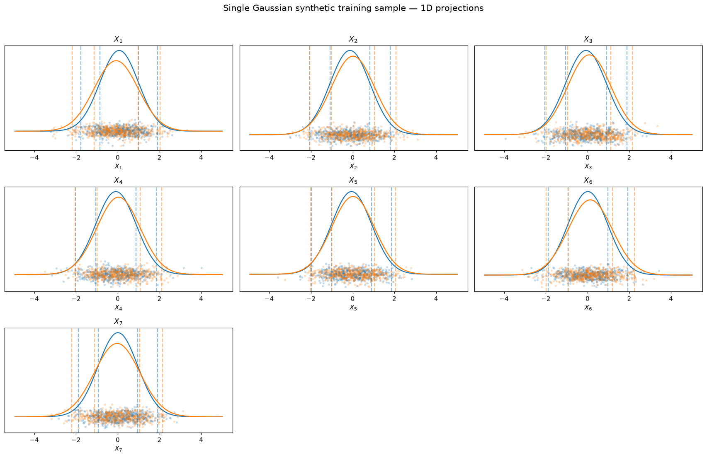
Single Gaussian synthetic training sample — 1D projections 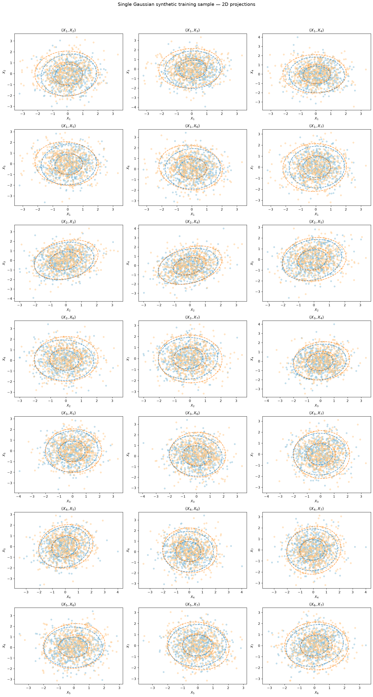
Single Gaussian synthetic training sample — 2D projections 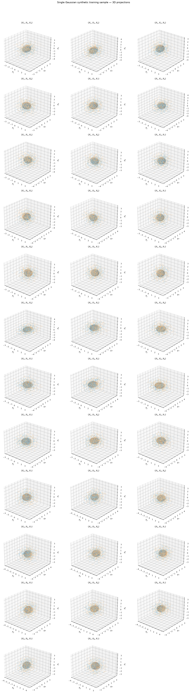
Single Gaussian synthetic training sample — 3D projections 1D 2D 3D
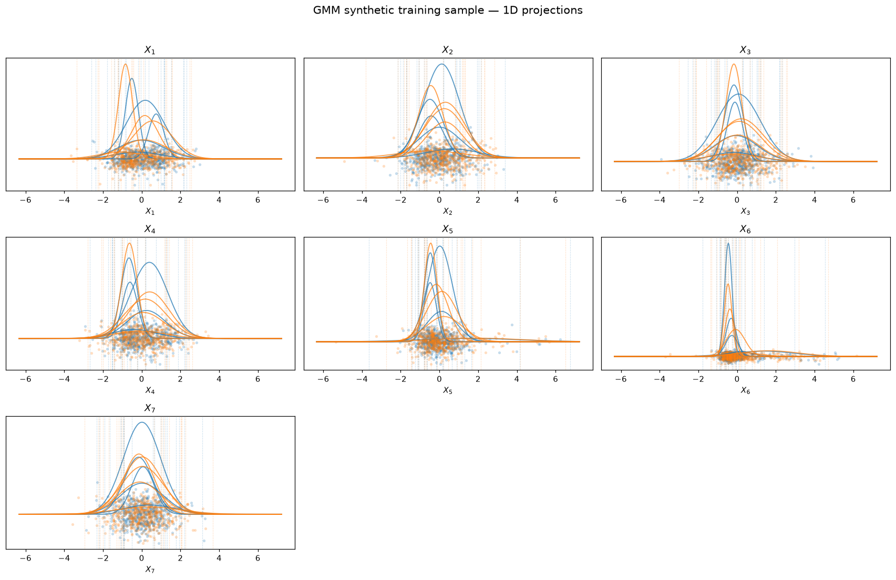
GMM synthetic training sample — 1D projections 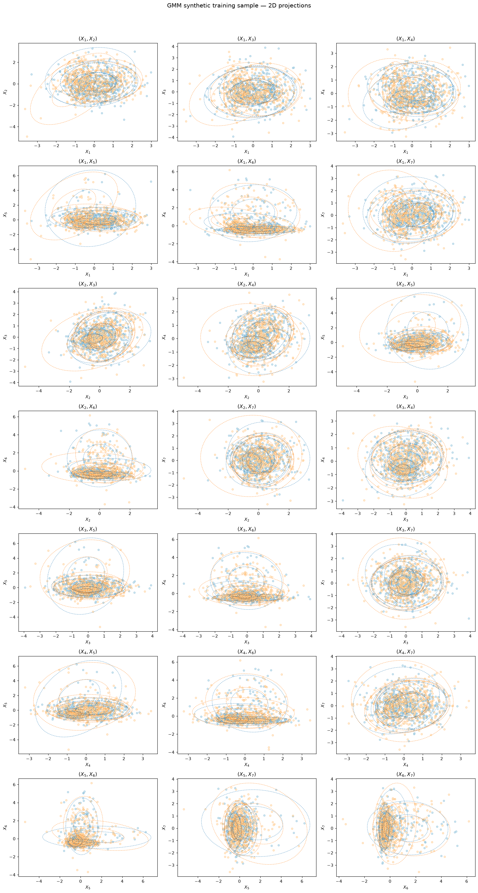
GMM synthetic training sample — 2D projections 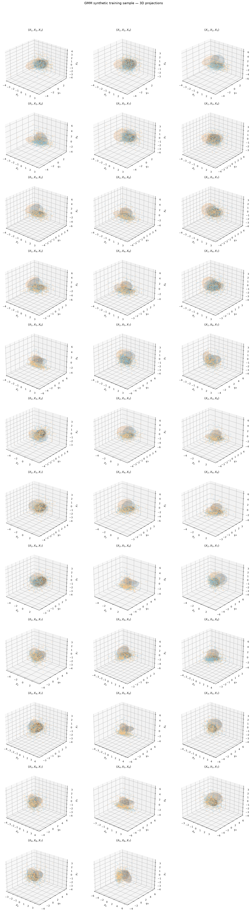
GMM synthetic training sample — 3D projections 5. Best subset comparison at largest N Largest evaluated sample size: N = 512 samples per class .
Classifier Real → Real best subset Real → Real loss Single Gaussian → Real best subset Single Gaussian → Real loss GMM → Real best subset GMM → Real loss SG same as real GMM same as real Linear SVM {X1, X2, X5, X6} 0.4542 {X1, X2, X5} 0.4544 {X1, X2, X5} 0.4533 no no Logistic Regression {X1, X2, X5} 0.4565 {X5} 0.4546 {X1, X2, X5} 0.4564 no yes Gaussian Naive Bayes {X1, X3, X4} 0.4369 {X1, X2, X3, X5, X7} 0.4361 {X1, X2, X3, X4, X7} 0.4374 no no
5.1 Loss vs N for the best subsets Real → Real Single Gaussian → Real GMM → Real
Real → Real arm 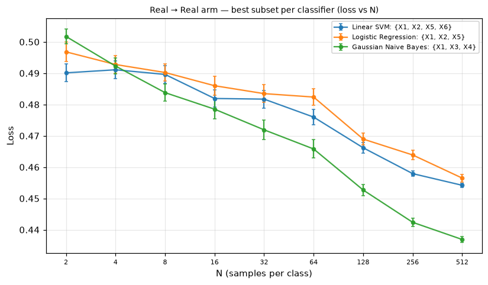
Single Gaussian → Real arm 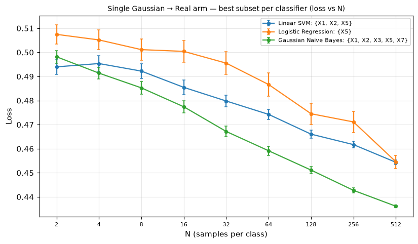
GMM → Real arm 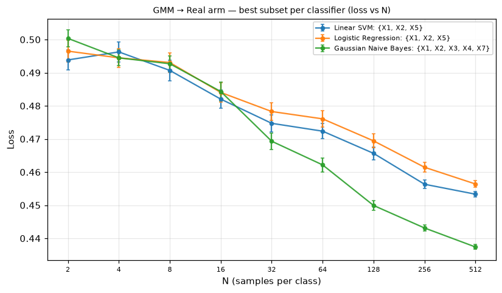
6. Top-ranked subsets Subsets are ranked by empirical test loss at the largest evaluated N = 512 samples per class.
Linear SVM Logistic Regression Gaussian Naive Bayes
6.1 Linear SVM Real → Real Single Gaussian → Real GMM → Real
Real → Real Rank Subset Loss SE 1 {X1, X2, X5, X6} 0.4542 0.0006 2 {X1, X2, X5} 0.4549 0.0008 3 {X1, X2, X5, X6, X7} 0.4557 0.0008 4 {X1, X2, X5, X7} 0.4559 0.0010 5 {X1, X5, X6} 0.4565 0.0010
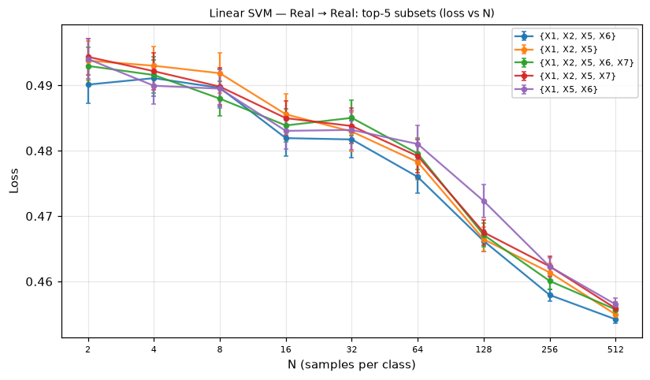
Single Gaussian → Real Rank Subset Loss SE 1 {X1, X2, X5} 0.4544 0.0010 2 {X1, X2, X5, X6} 0.4562 0.0007 3 {X5, X6} 0.4567 0.0011 4 {X1, X2, X5, X7} 0.4571 0.0008 5 {X1, X2, X4, X5} 0.4572 0.0011
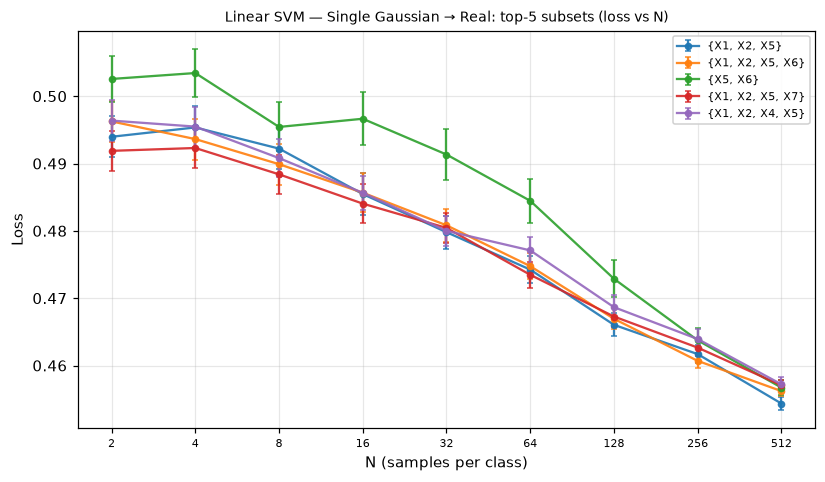
GMM → Real Rank Subset Loss SE 1 {X1, X2, X5} 0.4533 0.0008 2 {X1, X2, X5, X7} 0.4535 0.0009 3 {X1, X2, X5, X6} 0.4544 0.0006 4 {X1, X2, X5, X6, X7} 0.4547 0.0007 5 {X1, X2, X4, X5, X6} 0.4559 0.0007
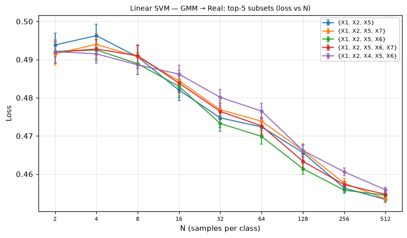
6.2 Logistic Regression Real → Real Single Gaussian → Real GMM → Real
Real → Real Rank Subset Loss SE 1 {X1, X2, X5} 0.4565 0.0012 2 {X1, X2, X5, X7} 0.4581 0.0012 3 {X1, X2, X5, X6} 0.4582 0.0009 4 {X1, X2, X4, X5} 0.4584 0.0012 5 {X1, X2, X5, X6, X7} 0.4588 0.0010
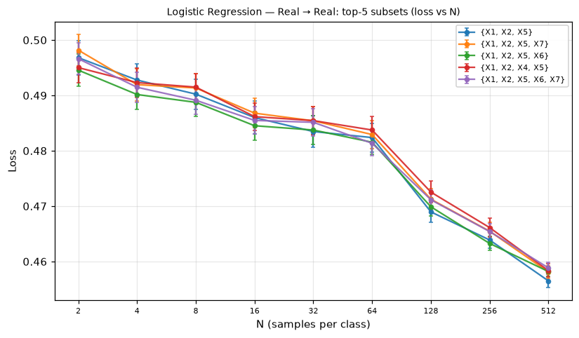
Single Gaussian → Real Rank Subset Loss SE 1 {X5} 0.4546 0.0028 2 {X1, X2, X5} 0.4567 0.0010 3 {X1, X2, X5, X6} 0.4573 0.0007 4 {X1, X2, X4, X5} 0.4575 0.0011 5 {X1, X2, X5, X6, X7} 0.4585 0.0007
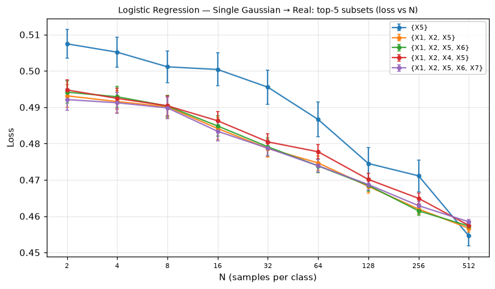
GMM → Real Rank Subset Loss SE 1 {X1, X2, X5} 0.4564 0.0010 2 {X1, X2, X4, X5} 0.4572 0.0010 3 {X1, X2, X5, X6} 0.4572 0.0007 4 {X1, X2, X5, X7} 0.4574 0.0010 5 {X1, X2, X5, X6, X7} 0.4577 0.0008
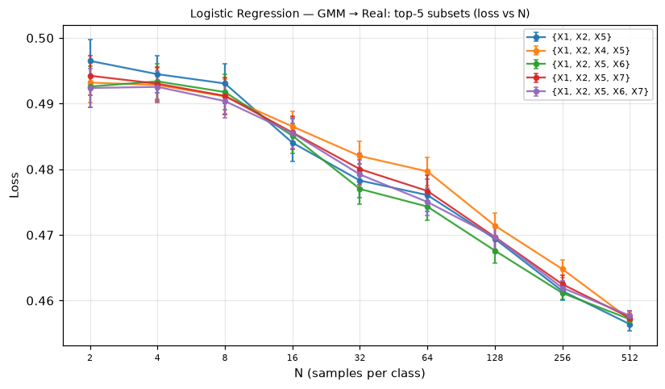
6.3 Gaussian Naive Bayes Real → Real Single Gaussian → Real GMM → Real
Real → Real Rank Subset Loss SE 1 {X1, X3, X4} 0.4369 0.0010 2 {X1, X2, X3, X4, X7} 0.4378 0.0007 3 {X1, X3, X4, X7} 0.4388 0.0006 4 {X1, X2, X3, X7} 0.4396 0.0008 5 {X1, X2, X3, X4} 0.4403 0.0010
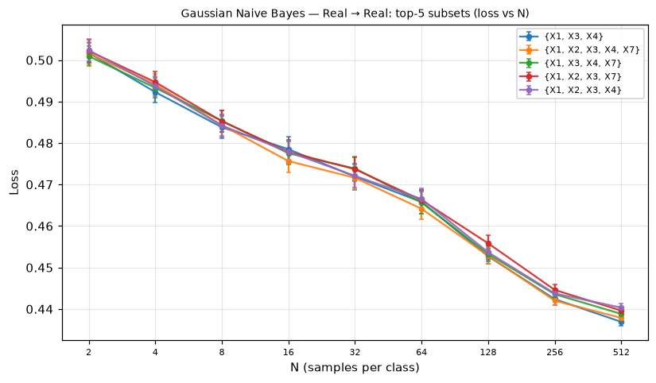
Single Gaussian → Real Rank Subset Loss SE 1 {X1, X2, X3, X5, X7} 0.4361 0.0006 2 {X1, X2, X3, X4, X5, X7} 0.4364 0.0007 3 {X1, X2, X3, X4, X7} 0.4373 0.0007 4 {X1, X2, X3, X7} 0.4381 0.0007 5 {X1, X3, X4} 0.4387 0.0009
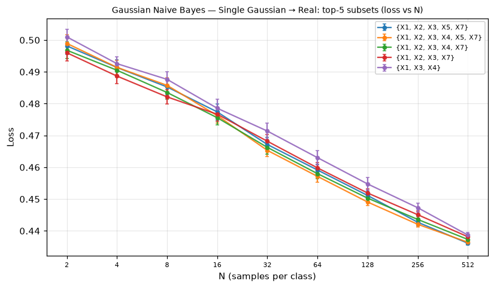
GMM → Real Rank Subset Loss SE 1 {X1, X2, X3, X4, X7} 0.4374 0.0007 2 {X1, X2, X3, X4, X5, X7} 0.4383 0.0008 3 {X1, X3, X4} 0.4389 0.0009 4 {X1, X3, X4, X7} 0.4390 0.0007 5 {X1, X2, X3, X7} 0.4392 0.0007
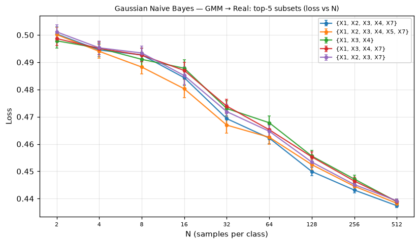
7. Structural fidelity metrics Ranking Structural Fidelity compares complete all-subset loss rankings using Spearman correlation with average-rank tie handling. Winner Agreement compares exact pairwise winners after excluding pairs tied in either arm. Progressive N-star Similarity compares directed crossing-cell sets and their latest observed-grid timing through the current sample-size prefix. These metrics remain separate; no composite index is reported.
constant_ranking means a non-reference ranking has no variation; no_valid_pairs means every unordered pair was tied in at least one arm; unavailable_first_prefix marks N1; no_crossings_in_either and no_shared_crossings distinguish empty crossing cases; ok means the corresponding metric is available.
7.1 Summary at N = 512 Classifier Comparison arm rho_rank(Nmax) Ranking status A_W(Nmax) Valid winner pairs Skipped tie pairs Winner status S_N*(<=Nmax) Reference crossings Arm crossings Shared crossings Crossing Jaccard Timing similarity N-star status Linear SVM Single Gaussian → Real 0.8672 ok 0.8614 7999 2 ok 0.3076 9389 7372 4955 0.4197 0.7329 ok Linear SVM GMM → Real 0.9708 ok 0.9344 7998 3 ok 0.4145 9389 9926 6672 0.5277 0.7855 ok Logistic Regression Single Gaussian → Real 0.9853 ok 0.9514 7999 2 ok 0.2932 7558 5740 3811 0.4017 0.7300 ok Logistic Regression GMM → Real 0.9827 ok 0.9461 8000 1 ok 0.3169 7558 8366 4685 0.4169 0.7602 ok Gaussian Naive Bayes Single Gaussian → Real 0.7915 ok 0.7951 7999 2 ok 0.3196 10325 6727 5178 0.4361 0.7328 ok Gaussian Naive Bayes GMM → Real 0.9144 ok 0.8715 7999 2 ok 0.4590 10325 10645 7907 0.6053 0.7583 ok
7.2 Metric curves Linear SVM Logistic Regression Gaussian Naive Bayes
Ranking fidelity Winner agreement Progressive N-star similarity
Ranking fidelity Winner agreement Progressive N-star similarity
Ranking fidelity Winner agreement Progressive N-star similarity
7.3 Directed winner matrices Matrix values are +1 when the row subset has lower loss, -1 when it has higher loss, 0 for an exact tie, and unavailable on the diagonal. The fixed display reduction does not affect either numerical metric.
Linear SVM Logistic Regression Gaussian Naive Bayes
Fixed Real → Real display subsets selected at Nmax: {X2}, {X2, X5}, {X1, X2, X5}, {X1, X2, X5, X6}, {X1, X2, X5, X6, X7}, {X1, X2, X4, X5, X6, X7}, {X1, X2, X3, X4, X5, X6, X7}
Real → Real Single Gaussian → Real GMM → Real
N = 2 N = 4 N = 8 N = 16 N = 32 N = 64 N = 128 N = 256 N = 512
N = 2 N = 4 N = 8 N = 16 N = 32 N = 64 N = 128 N = 256 N = 512
N = 2 N = 4 N = 8 N = 16 N = 32 N = 64 N = 128 N = 256 N = 512
Fixed Real → Real display subsets selected at Nmax: {X5}, {X5, X6}, {X1, X2, X5}, {X1, X2, X5, X7}, {X1, X2, X5, X6, X7}, {X1, X2, X4, X5, X6, X7}, {X1, X2, X3, X4, X5, X6, X7}
Real → Real Single Gaussian → Real GMM → Real
N = 2 N = 4 N = 8 N = 16 N = 32 N = 64 N = 128 N = 256 N = 512
N = 2 N = 4 N = 8 N = 16 N = 32 N = 64 N = 128 N = 256 N = 512
N = 2 N = 4 N = 8 N = 16 N = 32 N = 64 N = 128 N = 256 N = 512
Fixed Real → Real display subsets selected at Nmax: {X3}, {X3, X4}, {X1, X3, X4}, {X1, X3, X4, X7}, {X1, X2, X3, X4, X7}, {X1, X2, X3, X4, X6, X7}, {X1, X2, X3, X4, X5, X6, X7}
Real → Real Single Gaussian → Real GMM → Real
N = 2 N = 4 N = 8 N = 16 N = 32 N = 64 N = 128 N = 256 N = 512
N = 2 N = 4 N = 8 N = 16 N = 32 N = 64 N = 128 N = 256 N = 512
N = 2 N = 4 N = 8 N = 16 N = 32 N = 64 N = 128 N = 256 N = 512
7.4 Progressive directed N-star matrices Each directed cell shows the latest observed-grid crossing in that direction through the selected prefix. Missing cells are unavailable, not zero, and prefix tabs begin at N2.
Linear SVM Logistic Regression Gaussian Naive Bayes
The same fixed Real → Real display subsets are used: {X2}, {X2, X5}, {X1, X2, X5}, {X1, X2, X5, X6}, {X1, X2, X5, X6, X7}, {X1, X2, X4, X5, X6, X7}, {X1, X2, X3, X4, X5, X6, X7}
Real → Real Single Gaussian → Real GMM → Real
Prefix N = 4 Prefix N = 8 Prefix N = 16 Prefix N = 32 Prefix N = 64 Prefix N = 128 Prefix N = 256 Prefix N = 512
Prefix N = 4 Prefix N = 8 Prefix N = 16 Prefix N = 32 Prefix N = 64 Prefix N = 128 Prefix N = 256 Prefix N = 512
Prefix N = 4 Prefix N = 8 Prefix N = 16 Prefix N = 32 Prefix N = 64 Prefix N = 128 Prefix N = 256 Prefix N = 512
The same fixed Real → Real display subsets are used: {X5}, {X5, X6}, {X1, X2, X5}, {X1, X2, X5, X7}, {X1, X2, X5, X6, X7}, {X1, X2, X4, X5, X6, X7}, {X1, X2, X3, X4, X5, X6, X7}
Real → Real Single Gaussian → Real GMM → Real
Prefix N = 4 Prefix N = 8 Prefix N = 16 Prefix N = 32 Prefix N = 64 Prefix N = 128 Prefix N = 256 Prefix N = 512
Prefix N = 4 Prefix N = 8 Prefix N = 16 Prefix N = 32 Prefix N = 64 Prefix N = 128 Prefix N = 256 Prefix N = 512
Prefix N = 4 Prefix N = 8 Prefix N = 16 Prefix N = 32 Prefix N = 64 Prefix N = 128 Prefix N = 256 Prefix N = 512
The same fixed Real → Real display subsets are used: {X3}, {X3, X4}, {X1, X3, X4}, {X1, X3, X4, X7}, {X1, X2, X3, X4, X7}, {X1, X2, X3, X4, X6, X7}, {X1, X2, X3, X4, X5, X6, X7}
Real → Real Single Gaussian → Real GMM → Real
Prefix N = 4 Prefix N = 8 Prefix N = 16 Prefix N = 32 Prefix N = 64 Prefix N = 128 Prefix N = 256 Prefix N = 512
Prefix N = 4 Prefix N = 8 Prefix N = 16 Prefix N = 32 Prefix N = 64 Prefix N = 128 Prefix N = 256 Prefix N = 512
Prefix N = 4 Prefix N = 8 Prefix N = 16 Prefix N = 32 Prefix N = 64 Prefix N = 128 Prefix N = 256 Prefix N = 512
8. N-star availability For each classifier and channel-subset cardinality, the best subset at the largest evaluated sample size is used as a reference and compared against the best subset of every other cardinality and, when it exists, the second-best subset of the same cardinality. Reference and competitor subsets are selected on the Real → Real arm so that all three arms are compared on the same subsets.
A dash indicates that no crossing was detected within the evaluated sample-size grid. In that case, the Winner column reports which subset has the lower loss at the largest evaluated N.
If multiple crossings are detected, all of them are preserved in the underlying structured data, but only the last N* is reported and highlighted in this report. Dashed vertical lines on the graphs mark the reported interpolated N* values.
Linear SVM Logistic Regression Gaussian Naive Bayes
8.1 Linear SVM Best 1-channel reference Best 2-channel reference Best 3-channel reference Best 4-channel reference Best 5-channel reference Best 6-channel reference Best 7-channel reference
Best 1-channel subset Real → Real Single Gaussian → Real GMM → Real
Reference subset: {X2} = {hrt}
Real → Real VS N* Interpolated N* Winner 2-Best-1-ChSub: {X3} — — Reference Best-2-ChSub: {X2, X5} 16 8.5 VS Best-3-ChSub: {X1, X2, X5} 8 6.0 VS Best-4-ChSub: {X1, X2, X5, X6} — — VS Best-5-ChSub: {X1, X2, X5, X6, X7} 8 4.2 VS Best-6-ChSub: {X1, X2, X4, X5, X6, X7} 8 6.6 VS Best-7-ChSub: {X1, X2, X3, X4, X5, X6, X7} 8 5.8 VS
Reference subset: {X2} = {hrt}
Single Gaussian → Real VS N* Interpolated N* Winner 2-Best-1-ChSub: {X3} — — Reference Best-2-ChSub: {X2, X5} 128 75.9 VS Best-3-ChSub: {X1, X2, X5} 32 20.3 VS Best-4-ChSub: {X1, X2, X5, X6} 32 27.0 VS Best-5-ChSub: {X1, X2, X5, X6, X7} 32 25.7 VS Best-6-ChSub: {X1, X2, X4, X5, X6, X7} 128 90.8 VS Best-7-ChSub: {X1, X2, X3, X4, X5, X6, X7} 128 109.7 VS
Reference subset: {X2} = {hrt}
GMM → Real VS N* Interpolated N* Winner 2-Best-1-ChSub: {X3} 4 3.5 Reference Best-2-ChSub: {X2, X5} — — VS Best-3-ChSub: {X1, X2, X5} 8 4.6 VS Best-4-ChSub: {X1, X2, X5, X6} — — VS Best-5-ChSub: {X1, X2, X5, X6, X7} — — VS Best-6-ChSub: {X1, X2, X4, X5, X6, X7} 64 54.6 VS Best-7-ChSub: {X1, X2, X3, X4, X5, X6, X7} 128 74.1 VS
Best 2-channel subset Real → Real Single Gaussian → Real GMM → Real
Reference subset: {X2, X5} = {hrt, wblc}
Real → Real VS N* Interpolated N* Winner Best-1-ChSub: {X2} 16 8.5 Reference 2-Best-2-ChSub: {X1, X2} 512 262.7 Reference Best-3-ChSub: {X1, X2, X5} 8 6.7 VS Best-4-ChSub: {X1, X2, X5, X6} 8 5.2 VS Best-5-ChSub: {X1, X2, X5, X6, X7} 8 5.1 VS Best-6-ChSub: {X1, X2, X4, X5, X6, X7} 8 6.9 VS Best-7-ChSub: {X1, X2, X3, X4, X5, X6, X7} 256 135.3 VS
Reference subset: {X2, X5} = {hrt, wblc}
Single Gaussian → Real VS N* Interpolated N* Winner Best-1-ChSub: {X2} 128 75.9 Reference 2-Best-2-ChSub: {X1, X2} — — VS Best-3-ChSub: {X1, X2, X5} 64 33.4 VS Best-4-ChSub: {X1, X2, X5, X6} 64 43.1 VS Best-5-ChSub: {X1, X2, X5, X6, X7} 64 44.7 VS Best-6-ChSub: {X1, X2, X4, X5, X6, X7} 256 131.1 VS Best-7-ChSub: {X1, X2, X3, X4, X5, X6, X7} 256 215.5 VS
Reference subset: {X2, X5} = {hrt, wblc}
GMM → Real VS N* Interpolated N* Winner Best-1-ChSub: {X2} — — Reference 2-Best-2-ChSub: {X1, X2} 128 99.4 VS Best-3-ChSub: {X1, X2, X5} 32 18.3 VS Best-4-ChSub: {X1, X2, X5, X6} 32 20.0 VS Best-5-ChSub: {X1, X2, X5, X6, X7} 32 26.2 VS Best-6-ChSub: {X1, X2, X4, X5, X6, X7} 128 108.7 VS Best-7-ChSub: {X1, X2, X3, X4, X5, X6, X7} 256 170.2 VS
Best 3-channel subset Real → Real Single Gaussian → Real GMM → Real
Reference subset: {X1, X2, X5} = {meanbp, hrt, wblc}
Real → Real VS N* Interpolated N* Winner Best-1-ChSub: {X2} 8 6.0 Reference Best-2-ChSub: {X2, X5} 8 6.7 Reference 2-Best-3-ChSub: {X1, X5, X6} 32 30.5 Reference Best-4-ChSub: {X1, X2, X5, X6} — — VS Best-5-ChSub: {X1, X2, X5, X6, X7} 512 417.8 Reference Best-6-ChSub: {X1, X2, X4, X5, X6, X7} 512 266.4 Reference Best-7-ChSub: {X1, X2, X3, X4, X5, X6, X7} 16 8.0 Reference
Reference subset: {X1, X2, X5} = {meanbp, hrt, wblc}
Single Gaussian → Real VS N* Interpolated N* Winner Best-1-ChSub: {X2} 32 20.3 Reference Best-2-ChSub: {X2, X5} 64 33.4 Reference 2-Best-3-ChSub: {X1, X5, X6} — — Reference Best-4-ChSub: {X1, X2, X5, X6} 512 346.1 Reference Best-5-ChSub: {X1, X2, X5, X6, X7} 512 293.8 Reference Best-6-ChSub: {X1, X2, X4, X5, X6, X7} 16 10.5 Reference Best-7-ChSub: {X1, X2, X3, X4, X5, X6, X7} 16 10.0 Reference
Reference subset: {X1, X2, X5} = {meanbp, hrt, wblc}
GMM → Real VS N* Interpolated N* Winner Best-1-ChSub: {X2} 8 4.6 Reference Best-2-ChSub: {X2, X5} 32 18.3 Reference 2-Best-3-ChSub: {X1, X5, X6} 16 11.1 Reference Best-4-ChSub: {X1, X2, X5, X6} 512 341.0 Reference Best-5-ChSub: {X1, X2, X5, X6, X7} 256 220.7 Reference Best-6-ChSub: {X1, X2, X4, X5, X6, X7} 16 11.7 Reference Best-7-ChSub: {X1, X2, X3, X4, X5, X6, X7} 16 8.3 Reference
Best 4-channel subset Real → Real Single Gaussian → Real GMM → Real
Reference subset: {X1, X2, X5, X6} = {meanbp, hrt, wblc, crea}
Real → Real VS N* Interpolated N* Winner Best-1-ChSub: {X2} — — Reference Best-2-ChSub: {X2, X5} 8 5.2 Reference Best-3-ChSub: {X1, X2, X5} — — Reference 2-Best-4-ChSub: {X1, X2, X5, X7} — — Reference Best-5-ChSub: {X1, X2, X5, X6, X7} 16 11.7 Reference Best-6-ChSub: {X1, X2, X4, X5, X6, X7} — — Reference Best-7-ChSub: {X1, X2, X3, X4, X5, X6, X7} — — Reference
Reference subset: {X1, X2, X5, X6} = {meanbp, hrt, wblc, crea}
Single Gaussian → Real VS N* Interpolated N* Winner Best-1-ChSub: {X2} 32 27.0 Reference Best-2-ChSub: {X2, X5} 64 43.1 Reference Best-3-ChSub: {X1, X2, X5} 512 346.1 VS 2-Best-4-ChSub: {X1, X2, X5, X7} 128 114.7 Reference Best-5-ChSub: {X1, X2, X5, X6, X7} 64 38.4 Reference Best-6-ChSub: {X1, X2, X4, X5, X6, X7} 8 6.0 Reference Best-7-ChSub: {X1, X2, X3, X4, X5, X6, X7} 8 6.0 Reference
Reference subset: {X1, X2, X5, X6} = {meanbp, hrt, wblc, crea}
GMM → Real VS N* Interpolated N* Winner Best-1-ChSub: {X2} — — Reference Best-2-ChSub: {X2, X5} 32 20.0 Reference Best-3-ChSub: {X1, X2, X5} 512 341.0 VS 2-Best-4-ChSub: {X1, X2, X5, X7} 512 425.4 VS Best-5-ChSub: {X1, X2, X5, X6, X7} 4 2.9 Reference Best-6-ChSub: {X1, X2, X4, X5, X6, X7} 16 10.3 Reference Best-7-ChSub: {X1, X2, X3, X4, X5, X6, X7} 4 2.6 Reference
Best 5-channel subset Real → Real Single Gaussian → Real GMM → Real
Reference subset: {X1, X2, X5, X6, X7} = {meanbp, hrt, wblc, crea, sod}
Real → Real VS N* Interpolated N* Winner Best-1-ChSub: {X2} 8 4.2 Reference Best-2-ChSub: {X2, X5} 8 5.1 Reference Best-3-ChSub: {X1, X2, X5} 512 417.8 VS Best-4-ChSub: {X1, X2, X5, X6} 16 11.7 VS 2-Best-5-ChSub: {X1, X2, X4, X5, X6} 128 68.2 Reference Best-6-ChSub: {X1, X2, X4, X5, X6, X7} 64 46.8 Reference Best-7-ChSub: {X1, X2, X3, X4, X5, X6, X7} — — Reference
Reference subset: {X1, X2, X5, X6, X7} = {meanbp, hrt, wblc, crea, sod}
Single Gaussian → Real VS N* Interpolated N* Winner Best-1-ChSub: {X2} 32 25.7 Reference Best-2-ChSub: {X2, X5} 64 44.7 Reference Best-3-ChSub: {X1, X2, X5} 512 293.8 VS Best-4-ChSub: {X1, X2, X5, X6} 64 38.4 VS 2-Best-5-ChSub: {X1, X2, X4, X5, X6} 32 20.3 Reference Best-6-ChSub: {X1, X2, X4, X5, X6, X7} 8 4.4 Reference Best-7-ChSub: {X1, X2, X3, X4, X5, X6, X7} 8 5.0 Reference
Reference subset: {X1, X2, X5, X6, X7} = {meanbp, hrt, wblc, crea, sod}
GMM → Real VS N* Interpolated N* Winner Best-1-ChSub: {X2} — — Reference Best-2-ChSub: {X2, X5} 32 26.2 Reference Best-3-ChSub: {X1, X2, X5} 256 220.7 VS Best-4-ChSub: {X1, X2, X5, X6} 4 2.9 VS 2-Best-5-ChSub: {X1, X2, X4, X5, X6} 16 12.0 Reference Best-6-ChSub: {X1, X2, X4, X5, X6, X7} 16 13.7 Reference Best-7-ChSub: {X1, X2, X3, X4, X5, X6, X7} 16 10.6 Reference
Best 6-channel subset Real → Real Single Gaussian → Real GMM → Real
Reference subset: {X1, X2, X4, X5, X6, X7} = {meanbp, hrt, temp, wblc, crea, sod}
Real → Real VS N* Interpolated N* Winner Best-1-ChSub: {X2} 8 6.6 Reference Best-2-ChSub: {X2, X5} 8 6.9 Reference Best-3-ChSub: {X1, X2, X5} 512 266.4 VS Best-4-ChSub: {X1, X2, X5, X6} — — VS Best-5-ChSub: {X1, X2, X5, X6, X7} 64 46.8 VS 2-Best-6-ChSub: {X1, X2, X3, X5, X6, X7} 256 246.0 Reference Best-7-ChSub: {X1, X2, X3, X4, X5, X6, X7} 8 7.6 Reference
Reference subset: {X1, X2, X4, X5, X6, X7} = {meanbp, hrt, temp, wblc, crea, sod}
Single Gaussian → Real VS N* Interpolated N* Winner Best-1-ChSub: {X2} 128 90.8 Reference Best-2-ChSub: {X2, X5} 256 131.1 Reference Best-3-ChSub: {X1, X2, X5} 16 10.5 VS Best-4-ChSub: {X1, X2, X5, X6} 8 6.0 VS Best-5-ChSub: {X1, X2, X5, X6, X7} 8 4.4 VS 2-Best-6-ChSub: {X1, X2, X3, X5, X6, X7} 256 155.8 Reference Best-7-ChSub: {X1, X2, X3, X4, X5, X6, X7} 32 27.4 Reference
Reference subset: {X1, X2, X4, X5, X6, X7} = {meanbp, hrt, temp, wblc, crea, sod}
GMM → Real VS N* Interpolated N* Winner Best-1-ChSub: {X2} 64 54.6 Reference Best-2-ChSub: {X2, X5} 128 108.7 Reference Best-3-ChSub: {X1, X2, X5} 16 11.7 VS Best-4-ChSub: {X1, X2, X5, X6} 16 10.3 VS Best-5-ChSub: {X1, X2, X5, X6, X7} 16 13.7 VS 2-Best-6-ChSub: {X1, X2, X3, X5, X6, X7} 512 481.8 Reference Best-7-ChSub: {X1, X2, X3, X4, X5, X6, X7} 64 35.6 Reference
Best 7-channel subset Real → Real Single Gaussian → Real GMM → Real
Reference subset: {X1, X2, X3, X4, X5, X6, X7} = {meanbp, hrt, resp, temp, wblc, crea, sod}
Real → Real VS N* Interpolated N* Winner Best-1-ChSub: {X2} 8 5.8 Reference Best-2-ChSub: {X2, X5} 256 135.3 Reference Best-3-ChSub: {X1, X2, X5} 16 8.0 VS Best-4-ChSub: {X1, X2, X5, X6} — — VS Best-5-ChSub: {X1, X2, X5, X6, X7} — — VS Best-6-ChSub: {X1, X2, X4, X5, X6, X7} 8 7.6 VS
Reference subset: {X1, X2, X3, X4, X5, X6, X7} = {meanbp, hrt, resp, temp, wblc, crea, sod}
Single Gaussian → Real VS N* Interpolated N* Winner Best-1-ChSub: {X2} 128 109.7 Reference Best-2-ChSub: {X2, X5} 256 215.5 Reference Best-3-ChSub: {X1, X2, X5} 16 10.0 VS Best-4-ChSub: {X1, X2, X5, X6} 8 6.0 VS Best-5-ChSub: {X1, X2, X5, X6, X7} 8 5.0 VS Best-6-ChSub: {X1, X2, X4, X5, X6, X7} 32 27.4 VS
Reference subset: {X1, X2, X3, X4, X5, X6, X7} = {meanbp, hrt, resp, temp, wblc, crea, sod}
GMM → Real VS N* Interpolated N* Winner Best-1-ChSub: {X2} 128 74.1 Reference Best-2-ChSub: {X2, X5} 256 170.2 Reference Best-3-ChSub: {X1, X2, X5} 16 8.3 VS Best-4-ChSub: {X1, X2, X5, X6} 4 2.6 VS Best-5-ChSub: {X1, X2, X5, X6, X7} 16 10.6 VS Best-6-ChSub: {X1, X2, X4, X5, X6, X7} 64 35.6 VS
8.2 Logistic Regression Best 1-channel reference Best 2-channel reference Best 3-channel reference Best 4-channel reference Best 5-channel reference Best 6-channel reference Best 7-channel reference
Best 1-channel subset Real → Real Single Gaussian → Real GMM → Real
Reference subset: {X5} = {wblc}
Real → Real VS N* Interpolated N* Winner 2-Best-1-ChSub: {X6} 256 251.1 Reference Best-2-ChSub: {X5, X6} 8 4.1 VS Best-3-ChSub: {X1, X2, X5} — — VS Best-4-ChSub: {X1, X2, X5, X7} — — VS Best-5-ChSub: {X1, X2, X5, X6, X7} — — VS Best-6-ChSub: {X1, X2, X4, X5, X6, X7} — — VS Best-7-ChSub: {X1, X2, X3, X4, X5, X6, X7} 512 375.1 Reference
Reference subset: {X5} = {wblc}
Single Gaussian → Real VS N* Interpolated N* Winner 2-Best-1-ChSub: {X6} 512 271.2 Reference Best-2-ChSub: {X5, X6} 512 406.2 Reference Best-3-ChSub: {X1, X2, X5} 512 464.0 Reference Best-4-ChSub: {X1, X2, X5, X7} 512 428.2 Reference Best-5-ChSub: {X1, X2, X5, X6, X7} 512 429.9 Reference Best-6-ChSub: {X1, X2, X4, X5, X6, X7} 512 366.5 Reference Best-7-ChSub: {X1, X2, X3, X4, X5, X6, X7} 512 330.1 Reference
Reference subset: {X5} = {wblc}
GMM → Real VS N* Interpolated N* Winner 2-Best-1-ChSub: {X6} 256 217.7 Reference Best-2-ChSub: {X5, X6} 512 398.5 Reference Best-3-ChSub: {X1, X2, X5} 16 15.8 VS Best-4-ChSub: {X1, X2, X5, X7} 64 41.5 VS Best-5-ChSub: {X1, X2, X5, X6, X7} 64 34.6 VS Best-6-ChSub: {X1, X2, X4, X5, X6, X7} 512 410.8 Reference Best-7-ChSub: {X1, X2, X3, X4, X5, X6, X7} 512 296.1 Reference
Best 2-channel subset Real → Real Single Gaussian → Real GMM → Real
Reference subset: {X5, X6} = {wblc, crea}
Real → Real VS N* Interpolated N* Winner Best-1-ChSub: {X5} 8 4.1 Reference 2-Best-2-ChSub: {X1, X2} 256 247.6 Reference Best-3-ChSub: {X1, X2, X5} 4 3.6 VS Best-4-ChSub: {X1, X2, X5, X7} 4 3.5 VS Best-5-ChSub: {X1, X2, X5, X6, X7} 4 3.1 VS Best-6-ChSub: {X1, X2, X4, X5, X6, X7} 512 386.0 VS Best-7-ChSub: {X1, X2, X3, X4, X5, X6, X7} 256 218.1 Reference
Reference subset: {X5, X6} = {wblc, crea}
Single Gaussian → Real VS N* Interpolated N* Winner Best-1-ChSub: {X5} 512 406.2 VS 2-Best-2-ChSub: {X1, X2} 256 208.8 Reference Best-3-ChSub: {X1, X2, X5} — — VS Best-4-ChSub: {X1, X2, X5, X7} — — VS Best-5-ChSub: {X1, X2, X5, X6, X7} — — VS Best-6-ChSub: {X1, X2, X4, X5, X6, X7} 256 207.6 Reference Best-7-ChSub: {X1, X2, X3, X4, X5, X6, X7} 256 173.7 Reference
Reference subset: {X5, X6} = {wblc, crea}
GMM → Real VS N* Interpolated N* Winner Best-1-ChSub: {X5} 512 398.5 VS 2-Best-2-ChSub: {X1, X2} 512 268.7 Reference Best-3-ChSub: {X1, X2, X5} 128 72.1 VS Best-4-ChSub: {X1, X2, X5, X7} 128 85.2 VS Best-5-ChSub: {X1, X2, X5, X6, X7} 64 47.0 VS Best-6-ChSub: {X1, X2, X4, X5, X6, X7} 256 238.2 VS Best-7-ChSub: {X1, X2, X3, X4, X5, X6, X7} 4 2.6 Reference
Best 3-channel subset Real → Real Single Gaussian → Real GMM → Real
Reference subset: {X1, X2, X5} = {meanbp, hrt, wblc}
Real → Real VS N* Interpolated N* Winner Best-1-ChSub: {X5} — — Reference Best-2-ChSub: {X5, X6} 4 3.6 Reference 2-Best-3-ChSub: {X1, X2, X6} 512 290.7 Reference Best-4-ChSub: {X1, X2, X5, X7} 8 5.7 Reference Best-5-ChSub: {X1, X2, X5, X6, X7} 128 84.5 Reference Best-6-ChSub: {X1, X2, X4, X5, X6, X7} 8 5.7 Reference Best-7-ChSub: {X1, X2, X3, X4, X5, X6, X7} 8 5.3 Reference
Reference subset: {X1, X2, X5} = {meanbp, hrt, wblc}
Single Gaussian → Real VS N* Interpolated N* Winner Best-1-ChSub: {X5} 512 464.0 VS Best-2-ChSub: {X5, X6} — — Reference 2-Best-3-ChSub: {X1, X2, X6} 128 88.0 Reference Best-4-ChSub: {X1, X2, X5, X7} 128 125.1 Reference Best-5-ChSub: {X1, X2, X5, X6, X7} 128 103.0 Reference Best-6-ChSub: {X1, X2, X4, X5, X6, X7} 8 4.6 Reference Best-7-ChSub: {X1, X2, X3, X4, X5, X6, X7} 8 4.4 Reference
Reference subset: {X1, X2, X5} = {meanbp, hrt, wblc}
GMM → Real VS N* Interpolated N* Winner Best-1-ChSub: {X5} 16 15.8 Reference Best-2-ChSub: {X5, X6} 128 72.1 Reference 2-Best-3-ChSub: {X1, X2, X6} 128 97.4 Reference Best-4-ChSub: {X1, X2, X5, X7} 16 12.4 Reference Best-5-ChSub: {X1, X2, X5, X6, X7} 128 114.9 Reference Best-6-ChSub: {X1, X2, X4, X5, X6, X7} 16 11.7 Reference Best-7-ChSub: {X1, X2, X3, X4, X5, X6, X7} 16 11.4 Reference
Best 4-channel subset Real → Real Single Gaussian → Real GMM → Real
Reference subset: {X1, X2, X5, X7} = {meanbp, hrt, wblc, sod}
Real → Real VS N* Interpolated N* Winner Best-1-ChSub: {X5} — — Reference Best-2-ChSub: {X5, X6} 4 3.5 Reference Best-3-ChSub: {X1, X2, X5} 8 5.7 VS 2-Best-4-ChSub: {X1, X2, X5, X6} 512 502.6 Reference Best-5-ChSub: {X1, X2, X5, X6, X7} 512 275.8 Reference Best-6-ChSub: {X1, X2, X4, X5, X6, X7} 32 19.7 Reference Best-7-ChSub: {X1, X2, X3, X4, X5, X6, X7} 8 4.8 Reference
Reference subset: {X1, X2, X5, X7} = {meanbp, hrt, wblc, sod}
Single Gaussian → Real VS N* Interpolated N* Winner Best-1-ChSub: {X5} 512 428.2 VS Best-2-ChSub: {X5, X6} — — Reference Best-3-ChSub: {X1, X2, X5} 128 125.1 VS 2-Best-4-ChSub: {X1, X2, X5, X6} 256 145.9 VS Best-5-ChSub: {X1, X2, X5, X6, X7} 256 222.9 VS Best-6-ChSub: {X1, X2, X4, X5, X6, X7} — — Reference Best-7-ChSub: {X1, X2, X3, X4, X5, X6, X7} — — Reference
Reference subset: {X1, X2, X5, X7} = {meanbp, hrt, wblc, sod}
GMM → Real VS N* Interpolated N* Winner Best-1-ChSub: {X5} 64 41.5 Reference Best-2-ChSub: {X5, X6} 128 85.2 Reference Best-3-ChSub: {X1, X2, X5} 16 12.4 VS 2-Best-4-ChSub: {X1, X2, X5, X6} 16 12.3 VS Best-5-ChSub: {X1, X2, X5, X6, X7} 512 420.9 Reference Best-6-ChSub: {X1, X2, X4, X5, X6, X7} 16 11.1 Reference Best-7-ChSub: {X1, X2, X3, X4, X5, X6, X7} 16 10.2 Reference
Best 5-channel subset Real → Real Single Gaussian → Real GMM → Real
Reference subset: {X1, X2, X5, X6, X7} = {meanbp, hrt, wblc, crea, sod}
Real → Real VS N* Interpolated N* Winner Best-1-ChSub: {X5} — — Reference Best-2-ChSub: {X5, X6} 4 3.1 Reference Best-3-ChSub: {X1, X2, X5} 128 84.5 VS Best-4-ChSub: {X1, X2, X5, X7} 512 275.8 VS 2-Best-5-ChSub: {X1, X2, X4, X5, X7} — — Reference Best-6-ChSub: {X1, X2, X4, X5, X6, X7} 4 3.5 Reference Best-7-ChSub: {X1, X2, X3, X4, X5, X6, X7} — — Reference
Reference subset: {X1, X2, X5, X6, X7} = {meanbp, hrt, wblc, crea, sod}
Single Gaussian → Real VS N* Interpolated N* Winner Best-1-ChSub: {X5} 512 429.9 VS Best-2-ChSub: {X5, X6} — — Reference Best-3-ChSub: {X1, X2, X5} 128 103.0 VS Best-4-ChSub: {X1, X2, X5, X7} 256 222.9 Reference 2-Best-5-ChSub: {X1, X2, X4, X5, X7} — — Reference Best-6-ChSub: {X1, X2, X4, X5, X6, X7} — — Reference Best-7-ChSub: {X1, X2, X3, X4, X5, X6, X7} — — Reference
Reference subset: {X1, X2, X5, X6, X7} = {meanbp, hrt, wblc, crea, sod}
GMM → Real VS N* Interpolated N* Winner Best-1-ChSub: {X5} 64 34.6 Reference Best-2-ChSub: {X5, X6} 64 47.0 Reference Best-3-ChSub: {X1, X2, X5} 128 114.9 VS Best-4-ChSub: {X1, X2, X5, X7} 512 420.9 VS 2-Best-5-ChSub: {X1, X2, X4, X5, X7} 16 8.5 Reference Best-6-ChSub: {X1, X2, X4, X5, X6, X7} 16 9.6 Reference Best-7-ChSub: {X1, X2, X3, X4, X5, X6, X7} 16 8.0 Reference
Best 6-channel subset Real → Real Single Gaussian → Real GMM → Real
Reference subset: {X1, X2, X4, X5, X6, X7} = {meanbp, hrt, temp, wblc, crea, sod}
Real → Real VS N* Interpolated N* Winner Best-1-ChSub: {X5} — — Reference Best-2-ChSub: {X5, X6} 512 386.0 Reference Best-3-ChSub: {X1, X2, X5} 8 5.7 VS Best-4-ChSub: {X1, X2, X5, X7} 32 19.7 VS Best-5-ChSub: {X1, X2, X5, X6, X7} 4 3.5 VS 2-Best-6-ChSub: {X1, X2, X3, X5, X6, X7} 512 406.5 Reference Best-7-ChSub: {X1, X2, X3, X4, X5, X6, X7} 8 4.5 Reference
Reference subset: {X1, X2, X4, X5, X6, X7} = {meanbp, hrt, temp, wblc, crea, sod}
Single Gaussian → Real VS N* Interpolated N* Winner Best-1-ChSub: {X5} 512 366.5 VS Best-2-ChSub: {X5, X6} 256 207.6 VS Best-3-ChSub: {X1, X2, X5} 8 4.6 VS Best-4-ChSub: {X1, X2, X5, X7} — — VS Best-5-ChSub: {X1, X2, X5, X6, X7} — — VS 2-Best-6-ChSub: {X1, X2, X3, X5, X6, X7} 512 329.3 Reference Best-7-ChSub: {X1, X2, X3, X4, X5, X6, X7} 4 3.8 Reference
Reference subset: {X1, X2, X4, X5, X6, X7} = {meanbp, hrt, temp, wblc, crea, sod}
GMM → Real VS N* Interpolated N* Winner Best-1-ChSub: {X5} 512 410.8 VS Best-2-ChSub: {X5, X6} 256 238.2 Reference Best-3-ChSub: {X1, X2, X5} 16 11.7 VS Best-4-ChSub: {X1, X2, X5, X7} 16 11.1 VS Best-5-ChSub: {X1, X2, X5, X6, X7} 16 9.6 VS 2-Best-6-ChSub: {X1, X2, X3, X5, X6, X7} 512 368.6 Reference Best-7-ChSub: {X1, X2, X3, X4, X5, X6, X7} 32 17.2 Reference
Best 7-channel subset Real → Real Single Gaussian → Real GMM → Real
Reference subset: {X1, X2, X3, X4, X5, X6, X7} = {meanbp, hrt, resp, temp, wblc, crea, sod}
Real → Real VS N* Interpolated N* Winner Best-1-ChSub: {X5} 512 375.1 VS Best-2-ChSub: {X5, X6} 256 218.1 VS Best-3-ChSub: {X1, X2, X5} 8 5.3 VS Best-4-ChSub: {X1, X2, X5, X7} 8 4.8 VS Best-5-ChSub: {X1, X2, X5, X6, X7} — — VS Best-6-ChSub: {X1, X2, X4, X5, X6, X7} 8 4.5 VS
Reference subset: {X1, X2, X3, X4, X5, X6, X7} = {meanbp, hrt, resp, temp, wblc, crea, sod}
Single Gaussian → Real VS N* Interpolated N* Winner Best-1-ChSub: {X5} 512 330.1 VS Best-2-ChSub: {X5, X6} 256 173.7 VS Best-3-ChSub: {X1, X2, X5} 8 4.4 VS Best-4-ChSub: {X1, X2, X5, X7} — — VS Best-5-ChSub: {X1, X2, X5, X6, X7} — — VS Best-6-ChSub: {X1, X2, X4, X5, X6, X7} 4 3.8 VS
Reference subset: {X1, X2, X3, X4, X5, X6, X7} = {meanbp, hrt, resp, temp, wblc, crea, sod}
GMM → Real VS N* Interpolated N* Winner Best-1-ChSub: {X5} 512 296.1 VS Best-2-ChSub: {X5, X6} 4 2.6 VS Best-3-ChSub: {X1, X2, X5} 16 11.4 VS Best-4-ChSub: {X1, X2, X5, X7} 16 10.2 VS Best-5-ChSub: {X1, X2, X5, X6, X7} 16 8.0 VS Best-6-ChSub: {X1, X2, X4, X5, X6, X7} 32 17.2 VS
8.3 Gaussian Naive Bayes Best 1-channel reference Best 2-channel reference Best 3-channel reference Best 4-channel reference Best 5-channel reference Best 6-channel reference Best 7-channel reference
Best 1-channel subset Real → Real Single Gaussian → Real GMM → Real
Reference subset: {X3} = {resp}
Real → Real VS N* Interpolated N* Winner 2-Best-1-ChSub: {X2} 4 3.7 Reference Best-2-ChSub: {X3, X4} — — VS Best-3-ChSub: {X1, X3, X4} — — VS Best-4-ChSub: {X1, X3, X4, X7} — — VS Best-5-ChSub: {X1, X2, X3, X4, X7} 8 4.4 VS Best-6-ChSub: {X1, X2, X3, X4, X6, X7} 64 45.8 VS Best-7-ChSub: {X1, X2, X3, X4, X5, X6, X7} 64 45.6 VS
Reference subset: {X3} = {resp}
Single Gaussian → Real VS N* Interpolated N* Winner 2-Best-1-ChSub: {X2} 16 13.3 Reference Best-2-ChSub: {X3, X4} 512 397.8 Reference Best-3-ChSub: {X1, X3, X4} 8 4.5 VS Best-4-ChSub: {X1, X3, X4, X7} — — VS Best-5-ChSub: {X1, X2, X3, X4, X7} — — VS Best-6-ChSub: {X1, X2, X3, X4, X6, X7} — — VS Best-7-ChSub: {X1, X2, X3, X4, X5, X6, X7} 8 4.0 VS
Reference subset: {X3} = {resp}
GMM → Real VS N* Interpolated N* Winner 2-Best-1-ChSub: {X2} 512 349.7 Reference Best-2-ChSub: {X3, X4} 4 3.6 VS Best-3-ChSub: {X1, X3, X4} 4 3.2 VS Best-4-ChSub: {X1, X3, X4, X7} 4 3.3 VS Best-5-ChSub: {X1, X2, X3, X4, X7} 4 3.4 VS Best-6-ChSub: {X1, X2, X3, X4, X6, X7} 4 3.7 VS Best-7-ChSub: {X1, X2, X3, X4, X5, X6, X7} 4 3.3 VS
Best 2-channel subset Real → Real Single Gaussian → Real GMM → Real
Reference subset: {X3, X4} = {resp, temp}
Real → Real VS N* Interpolated N* Winner Best-1-ChSub: {X3} — — Reference 2-Best-2-ChSub: {X1, X3} 256 254.2 Reference Best-3-ChSub: {X1, X3, X4} — — VS Best-4-ChSub: {X1, X3, X4, X7} 8 5.4 VS Best-5-ChSub: {X1, X2, X3, X4, X7} 8 5.6 VS Best-6-ChSub: {X1, X2, X3, X4, X6, X7} 128 77.3 VS Best-7-ChSub: {X1, X2, X3, X4, X5, X6, X7} 512 297.2 VS
Reference subset: {X3, X4} = {resp, temp}
Single Gaussian → Real VS N* Interpolated N* Winner Best-1-ChSub: {X3} 512 397.8 VS 2-Best-2-ChSub: {X1, X3} 4 2.3 VS Best-3-ChSub: {X1, X3, X4} 4 2.4 VS Best-4-ChSub: {X1, X3, X4, X7} — — VS Best-5-ChSub: {X1, X2, X3, X4, X7} — — VS Best-6-ChSub: {X1, X2, X3, X4, X6, X7} — — VS Best-7-ChSub: {X1, X2, X3, X4, X5, X6, X7} — — VS
Reference subset: {X3, X4} = {resp, temp}
GMM → Real VS N* Interpolated N* Winner Best-1-ChSub: {X3} 4 3.6 Reference 2-Best-2-ChSub: {X1, X3} 16 12.5 VS Best-3-ChSub: {X1, X3, X4} — — VS Best-4-ChSub: {X1, X3, X4, X7} 16 8.7 VS Best-5-ChSub: {X1, X2, X3, X4, X7} 16 8.6 VS Best-6-ChSub: {X1, X2, X3, X4, X6, X7} 4 3.9 VS Best-7-ChSub: {X1, X2, X3, X4, X5, X6, X7} 4 3.0 VS
Best 3-channel subset Real → Real Single Gaussian → Real GMM → Real
Reference subset: {X1, X3, X4} = {meanbp, resp, temp}
Real → Real VS N* Interpolated N* Winner Best-1-ChSub: {X3} — — Reference Best-2-ChSub: {X3, X4} — — Reference 2-Best-3-ChSub: {X1, X2, X3} — — Reference Best-4-ChSub: {X1, X3, X4, X7} 128 77.1 Reference Best-5-ChSub: {X1, X2, X3, X4, X7} 512 327.1 Reference Best-6-ChSub: {X1, X2, X3, X4, X6, X7} — — Reference Best-7-ChSub: {X1, X2, X3, X4, X5, X6, X7} 32 16.5 Reference
Reference subset: {X1, X3, X4} = {meanbp, resp, temp}
Single Gaussian → Real VS N* Interpolated N* Winner Best-1-ChSub: {X3} 8 4.5 Reference Best-2-ChSub: {X3, X4} 4 2.4 Reference 2-Best-3-ChSub: {X1, X2, X3} 256 156.1 Reference Best-4-ChSub: {X1, X3, X4, X7} 512 373.5 Reference Best-5-ChSub: {X1, X2, X3, X4, X7} — — VS Best-6-ChSub: {X1, X2, X3, X4, X6, X7} 512 392.2 Reference Best-7-ChSub: {X1, X2, X3, X4, X5, X6, X7} 512 477.2 Reference
Reference subset: {X1, X3, X4} = {meanbp, resp, temp}
GMM → Real VS N* Interpolated N* Winner Best-1-ChSub: {X3} 4 3.2 Reference Best-2-ChSub: {X3, X4} — — Reference 2-Best-3-ChSub: {X1, X2, X3} 128 83.8 Reference Best-4-ChSub: {X1, X3, X4, X7} 512 478.9 Reference Best-5-ChSub: {X1, X2, X3, X4, X7} 16 10.6 VS Best-6-ChSub: {X1, X2, X3, X4, X6, X7} 512 407.1 Reference Best-7-ChSub: {X1, X2, X3, X4, X5, X6, X7} 512 383.0 Reference
Best 4-channel subset Real → Real Single Gaussian → Real GMM → Real
Reference subset: {X1, X3, X4, X7} = {meanbp, resp, temp, sod}
Real → Real VS N* Interpolated N* Winner Best-1-ChSub: {X3} — — Reference Best-2-ChSub: {X3, X4} 8 5.4 Reference Best-3-ChSub: {X1, X3, X4} 128 77.1 VS 2-Best-4-ChSub: {X1, X2, X3, X7} 64 39.0 Reference Best-5-ChSub: {X1, X2, X3, X4, X7} 8 5.8 VS Best-6-ChSub: {X1, X2, X3, X4, X6, X7} 16 9.1 Reference Best-7-ChSub: {X1, X2, X3, X4, X5, X6, X7} 8 5.8 Reference
Reference subset: {X1, X3, X4, X7} = {meanbp, resp, temp, sod}
Single Gaussian → Real VS N* Interpolated N* Winner Best-1-ChSub: {X3} — — Reference Best-2-ChSub: {X3, X4} — — Reference Best-3-ChSub: {X1, X3, X4} 512 373.5 VS 2-Best-4-ChSub: {X1, X2, X3, X7} — — VS Best-5-ChSub: {X1, X2, X3, X4, X7} — — VS Best-6-ChSub: {X1, X2, X3, X4, X6, X7} 512 425.3 Reference Best-7-ChSub: {X1, X2, X3, X4, X5, X6, X7} 8 4.4 VS
Reference subset: {X1, X3, X4, X7} = {meanbp, resp, temp, sod}
GMM → Real VS N* Interpolated N* Winner Best-1-ChSub: {X3} 4 3.3 Reference Best-2-ChSub: {X3, X4} 16 8.7 Reference Best-3-ChSub: {X1, X3, X4} 512 478.9 VS 2-Best-4-ChSub: {X1, X2, X3, X7} 512 474.9 Reference Best-5-ChSub: {X1, X2, X3, X4, X7} 16 8.3 VS Best-6-ChSub: {X1, X2, X3, X4, X6, X7} 512 368.6 Reference Best-7-ChSub: {X1, X2, X3, X4, X5, X6, X7} 512 320.0 Reference
Best 5-channel subset Real → Real Single Gaussian → Real GMM → Real
Reference subset: {X1, X2, X3, X4, X7} = {meanbp, hrt, resp, temp, sod}
Real → Real VS N* Interpolated N* Winner Best-1-ChSub: {X3} 8 4.4 Reference Best-2-ChSub: {X3, X4} 8 5.6 Reference Best-3-ChSub: {X1, X3, X4} 512 327.1 VS Best-4-ChSub: {X1, X3, X4, X7} 8 5.8 Reference 2-Best-5-ChSub: {X1, X2, X3, X4, X6} — — Reference Best-6-ChSub: {X1, X2, X3, X4, X6, X7} 8 5.4 Reference Best-7-ChSub: {X1, X2, X3, X4, X5, X6, X7} 8 5.8 Reference
Reference subset: {X1, X2, X3, X4, X7} = {meanbp, hrt, resp, temp, sod}
Single Gaussian → Real VS N* Interpolated N* Winner Best-1-ChSub: {X3} — — Reference Best-2-ChSub: {X3, X4} — — Reference Best-3-ChSub: {X1, X3, X4} — — Reference Best-4-ChSub: {X1, X3, X4, X7} — — Reference 2-Best-5-ChSub: {X1, X2, X3, X4, X6} 16 10.4 Reference Best-6-ChSub: {X1, X2, X3, X4, X6, X7} 128 78.6 Reference Best-7-ChSub: {X1, X2, X3, X4, X5, X6, X7} 256 181.0 Reference
Reference subset: {X1, X2, X3, X4, X7} = {meanbp, hrt, resp, temp, sod}
GMM → Real VS N* Interpolated N* Winner Best-1-ChSub: {X3} 4 3.4 Reference Best-2-ChSub: {X3, X4} 16 8.6 Reference Best-3-ChSub: {X1, X3, X4} 16 10.6 Reference Best-4-ChSub: {X1, X3, X4, X7} 16 8.3 Reference 2-Best-5-ChSub: {X1, X2, X3, X4, X6} 32 22.3 Reference Best-6-ChSub: {X1, X2, X3, X4, X6, X7} 32 21.9 Reference Best-7-ChSub: {X1, X2, X3, X4, X5, X6, X7} 128 70.9 Reference
Best 6-channel subset Real → Real Single Gaussian → Real GMM → Real
Reference subset: {X1, X2, X3, X4, X6, X7} = {meanbp, hrt, resp, temp, crea, sod}
Real → Real VS N* Interpolated N* Winner Best-1-ChSub: {X3} 64 45.8 Reference Best-2-ChSub: {X3, X4} 128 77.3 Reference Best-3-ChSub: {X1, X3, X4} — — VS Best-4-ChSub: {X1, X3, X4, X7} 16 9.1 VS Best-5-ChSub: {X1, X2, X3, X4, X7} 8 5.4 VS 2-Best-6-ChSub: {X1, X2, X3, X4, X5, X7} 64 57.8 Reference Best-7-ChSub: {X1, X2, X3, X4, X5, X6, X7} 64 46.1 Reference
Reference subset: {X1, X2, X3, X4, X6, X7} = {meanbp, hrt, resp, temp, crea, sod}
Single Gaussian → Real VS N* Interpolated N* Winner Best-1-ChSub: {X3} — — Reference Best-2-ChSub: {X3, X4} — — Reference Best-3-ChSub: {X1, X3, X4} 512 392.2 VS Best-4-ChSub: {X1, X3, X4, X7} 512 425.3 VS Best-5-ChSub: {X1, X2, X3, X4, X7} 128 78.6 VS 2-Best-6-ChSub: {X1, X2, X3, X4, X5, X7} 32 22.3 VS Best-7-ChSub: {X1, X2, X3, X4, X5, X6, X7} 16 14.2 VS
Reference subset: {X1, X2, X3, X4, X6, X7} = {meanbp, hrt, resp, temp, crea, sod}
GMM → Real VS N* Interpolated N* Winner Best-1-ChSub: {X3} 4 3.7 Reference Best-2-ChSub: {X3, X4} 4 3.9 Reference Best-3-ChSub: {X1, X3, X4} 512 407.1 VS Best-4-ChSub: {X1, X3, X4, X7} 512 368.6 VS Best-5-ChSub: {X1, X2, X3, X4, X7} 32 21.9 VS 2-Best-6-ChSub: {X1, X2, X3, X4, X5, X7} 128 78.2 VS Best-7-ChSub: {X1, X2, X3, X4, X5, X6, X7} 128 94.8 Reference
Best 7-channel subset Real → Real Single Gaussian → Real GMM → Real
Reference subset: {X1, X2, X3, X4, X5, X6, X7} = {meanbp, hrt, resp, temp, wblc, crea, sod}
Real → Real VS N* Interpolated N* Winner Best-1-ChSub: {X3} 64 45.6 Reference Best-2-ChSub: {X3, X4} 512 297.2 Reference Best-3-ChSub: {X1, X3, X4} 32 16.5 VS Best-4-ChSub: {X1, X3, X4, X7} 8 5.8 VS Best-5-ChSub: {X1, X2, X3, X4, X7} 8 5.8 VS Best-6-ChSub: {X1, X2, X3, X4, X6, X7} 64 46.1 VS
Reference subset: {X1, X2, X3, X4, X5, X6, X7} = {meanbp, hrt, resp, temp, wblc, crea, sod}
Single Gaussian → Real VS N* Interpolated N* Winner Best-1-ChSub: {X3} 8 4.0 Reference Best-2-ChSub: {X3, X4} — — Reference Best-3-ChSub: {X1, X3, X4} 512 477.2 VS Best-4-ChSub: {X1, X3, X4, X7} 8 4.4 Reference Best-5-ChSub: {X1, X2, X3, X4, X7} 256 181.0 VS Best-6-ChSub: {X1, X2, X3, X4, X6, X7} 16 14.2 Reference
Reference subset: {X1, X2, X3, X4, X5, X6, X7} = {meanbp, hrt, resp, temp, wblc, crea, sod}
GMM → Real VS N* Interpolated N* Winner Best-1-ChSub: {X3} 4 3.3 Reference Best-2-ChSub: {X3, X4} 4 3.0 Reference Best-3-ChSub: {X1, X3, X4} 512 383.0 VS Best-4-ChSub: {X1, X3, X4, X7} 512 320.0 VS Best-5-ChSub: {X1, X2, X3, X4, X7} 128 70.9 VS Best-6-ChSub: {X1, X2, X3, X4, X6, X7} 128 94.8 VS
9. Interpretation notes Ranking fidelity Compare subset rankings against Real → Real separately for each classifier and sample size.
Exact-tie-aware winner agreement Pairwise agreement excludes comparisons tied in either arm and reports availability explicitly.
Progressive N-star similarity Compare progressive crossing structure only where the required prefixes are available.
Near-balanced endpoint The cohort contains 4,711 negatives and 4,162 positives; balanced training draws isolate distributional fidelity.
Limitations Complete-case selection can alter the represented patient population. Fixed-horizon binarization discards detailed time-to-event information. Smoke-mode results are preliminary pipeline evidence, not final inferential conclusions.